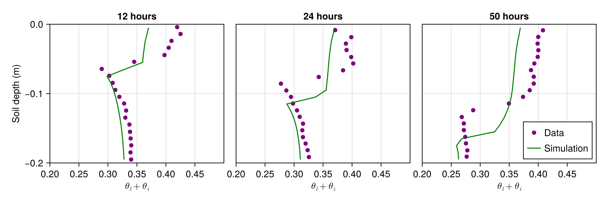

Modeling a freezing front in unsaturated soil
Before reading this tutorial, we recommend that you look over the coupled energy and water tutorial. That tutorial showed how to solve the heat equation for soil volumetric internal energy ρe_int, simultaneously with Richards equation for volumetric liquid water fraction ϑ_l, assuming zero volumetric ice fraction θ_i for all time, everywhere in the domain. In this example, we add in a source term to the right hand side for both θ_i and ϑ_l which models freezing and thawing and conserves water mass during the process. The equations are
$\frac{∂ ρe_{int}}{∂ t} = ∇ ⋅ κ(θ_l, θ_i; ν, ...) ∇T + ∇ ⋅ ρe_{int_{liq}} K (T,θ_l, θ_i; ν, ...) \nabla h( ϑ_l, z; ν, ...)$
$\frac{ ∂ ϑ_l}{∂ t} = ∇ ⋅ K (T,θ_l, θ_i; ν, ...) ∇h( ϑ_l, z; ν, ...) -\frac{F_T}{ρ_l}$
$\frac{ ∂ θ_i}{∂ t} = \frac{F_T}{ρ_i}$
Here
$t$ is the time (s),
$z$ is the location in the vertical (m),
$ρe_{int}$ is the volumetric internal energy of the soil (J/m^3),
$T$ is the temperature of the soil (K),
$κ$ is the thermal conductivity (W/m/K),
$ρe_{int_{liq}}$ is the volumetric internal energy of liquid water (J/m^3),
$K$ is the hydraulic conductivity (m/s),
$h$ is the hydraulic head (m),
$ϑ_l$ is the augmented volumetric liquid water fraction,
$θ_i$ is the volumetric ice fraction,
$ν, ...$ denotes parameters relating to soil type, such as porosity, and
$F_T$ is the freeze-thaw term.
To begin, we will show how to implement adding in this source term. After the results are obtained, we will explain how our model parameterizes this effect and compare the results with some analytic expections.
We solve these equations in an effectively 1-d domain with $z ∈ [-0.2,0]$, and with the following boundary and initial conditions:
$- κ ∇T(t, z = 0) = 28 W/m^2/K (T - 267.15K) ẑ$
$- κ ∇T(t, z= -0.2) = -3 W/m^2/K (T - 279.85K) ẑ$
$T(t = 0, z) = 279.85 K$
$- K ∇h(t, z = 0) = 0 ẑ$
$-K ∇h(t, z = -0.2) = 0 ẑ$
$ϑ_l(t = 0, z) = 0.33$.
The problem setup and soil properties are chosen to match the lab experiment of Mizoguchi (1990), as detailed in Hansson (2004) and Dall'Amico (2011). Like Hansson et al., we allow for a small amount of energy leakage at the bottom of the domain to account for imperfect insulation.
Import necessary modules
import SciMLBase
import ClimaTimeSteppers as CTS
using DelimitedFiles
using CairoMakie
using ClimaCore
import ClimaParams as CP
using ClimaLand
using ClimaLand.Domains: Column
using ClimaLand.Soil
import ClimaLand
import ClimaLand.Parameters as LPPreliminary set-up
Choose a floating point precision, and get the parameter set, which holds constants used across CliMA models:
FT = Float32Float32Set the values of other parameters required by the model:
ν = FT(0.535)
K_sat = FT(3.2e-6) # m/s
S_s = FT(1e-3) #inverse meters
vg_n = FT(1.48)
vg_α = FT(1.11) # inverse meters
hydrology_cm = vanGenuchten{FT}(; α = vg_α, n = vg_n);You could also try the Brooks and Corey model:
#ψb = FT(-0.6)
#c = FT(0.43)
#hcm = BrooksCorey(;ψb = ψb, c = c);
θ_r = FT(0.05)
ν_ss_om = FT(0.3)
ν_ss_quartz = FT(0.7)
ν_ss_gravel = FT(0.0)
params = Soil.EnergyHydrologyParameters(
FT;
ν,
ν_ss_om,
ν_ss_quartz,
ν_ss_gravel,
hydrology_cm,
K_sat,
S_s,
θ_r,
);Choose the domain and discretization:
zmax = FT(0)
zmin = FT(-0.2)
nelems = 20
soil_domain = Column(; zlim = (zmin, zmax), nelements = nelems);Set the boundary conditions:
zero_water_flux_bc = WaterFluxBC((p, t) -> 0.0)
function top_heat_flux(p, t)
FT = eltype(p.soil.T)
p_len = ClimaCore.Spaces.nlevels(axes(p.soil.T))
T_c = ClimaCore.Fields.level(p.soil.T, p_len)
return @. FT(28 * (T_c - 267.15))
end
function bottom_heat_flux(p, t)
FT = eltype(p.soil.T)
T_c = ClimaCore.Fields.level(p.soil.T, 1)
return @. FT(-3 * (T_c - 279.85))
end
top_heat_flux_bc = HeatFluxBC(top_heat_flux)
bottom_heat_flux_bc = HeatFluxBC(bottom_heat_flux)
boundary_fluxes = (;
top = WaterHeatBC(; water = zero_water_flux_bc, heat = top_heat_flux_bc),
bottom = WaterHeatBC(;
water = zero_water_flux_bc,
heat = bottom_heat_flux_bc,
),
);Create the source term instance. Our phase change model requires knowledge of the vertical spacing, so we pass that information in via an attribute of the PhaseChange structure. Sources are added as elements of a list of sources. Here we just add freezing and thawing.
sources = (PhaseChange{FT}(),);Now we can package this up in the EnergyHydrology model struct:
soil = Soil.EnergyHydrology{FT}(;
parameters = params,
domain = soil_domain,
boundary_conditions = boundary_fluxes,
sources = sources,
);Running a simulation
Once we have the model, we can initialize the state vectors and obtain the coordinates
Y, p, coords = initialize(soil);After which, we can specify the initial condition function, and initialze the variables:
function init_soil!(Ysoil, z, params)
ν = params.ν
FT = eltype(Ysoil.soil.ϑ_l)
Ysoil.soil.ϑ_l .= FT(0.33)
Ysoil.soil.θ_i .= FT(0.0)
T = FT(279.85)
ρc_s = Soil.volumetric_heat_capacity(
FT(0.33),
FT(0.0),
params.ρc_ds,
params.earth_param_set,
)
Ysoil.soil.ρe_int .=
Soil.volumetric_internal_energy.(
FT(0.0),
ρc_s,
T,
params.earth_param_set,
)
end
init_soil!(Y, coords.subsurface.z, soil.parameters);We choose the initial and final simulation times:
t0 = Float64(0)
tf = Float64(60 * 60 * 50);We set the cache values corresponding to the initial conditions of the state Y:
set_initial_cache! = make_set_initial_cache(soil);
set_initial_cache!(p, Y, t0);Create the tendency function, and choose a timestep, and timestepper:
exp_tendency! = make_exp_tendency(soil)
imp_tendency! = make_imp_tendency(soil);
jacobian! = ClimaLand.make_jacobian(soil);
jac_kwargs = (; jac_prototype = ImplicitEquationJacobian(Y), Wfact = jacobian!);
dt = Float64(100)
timestepper = CTS.ARS111();
ode_algo = CTS.IMEXAlgorithm(
timestepper,
CTS.NewtonsMethod(
max_iters = 3,
update_j = CTS.UpdateEvery(CTS.NewTimeStep),
),
);Problem definition and callbacks
prob = SciMLBase.ODEProblem(
CTS.ClimaODEFunction(
T_exp! = exp_tendency!,
T_imp! = SciMLBase.ODEFunction(imp_tendency!; jac_kwargs...),
dss! = ClimaLand.dss!,
),
Y,
(t0, tf),
p,
);Now we can solve the problem.
sol = SciMLBase.solve(prob, ode_algo; dt = dt, saveat = 0:3600:tf);Comparison to data
This data was obtained by us from the figures of Hansson et al. (2004), but was originally obtained by Mizoguchi (1990). No error bars were reported, and we haven't quantified the error in our estimation of the data from images.
dataset_path = ClimaLand.Artifacts.mizoguchi1990_soil_freezing_data();
ds = readdlm(dataset_path, ',')
hours = ds[:, 1][2:end]
vwc = ds[:, 2][2:end] ./ 100.0
depth = ds[:, 3][2:end]
mask_12h = hours .== 12
mask_24h = hours .== 24
mask_50h = hours .== 50;
fig = Figure(size = (900, 300))
ax1 = Axis(
fig[1, 1],
title = "12 hours",
xlabel = L"θ_l + θ_i",
ylabel = "Soil depth (m)",
)
limits!(ax1, 0.2, 0.5, -0.2, 0.0)
ax2 = Axis(
fig[1, 2],
title = "24 hours",
xlabel = L"θ_l + θ_i",
yticksvisible = false,
yticklabelsvisible = false,
)
limits!(ax2, 0.2, 0.5, -0.2, 0.0)
ax3 = Axis(
fig[1, 3],
title = "50 hours",
xlabel = L"θ_l + θ_i",
yticksvisible = false,
yticklabelsvisible = false,
)
limits!(ax3, 0.2, 0.5, -0.2, 0.0)
z = parent(coords.subsurface.z)[:];
scatter!(ax1, vwc[mask_12h], -depth[mask_12h], label = "", color = "purple")
lines!(
ax1,
parent(sol.u[13].soil.ϑ_l .+ sol.u[13].soil.θ_i)[:],
z,
label = "",
color = :green,
)
scatter!(ax2, vwc[mask_24h], -depth[mask_24h], label = "", color = "purple")
lines!(
ax2,
parent(sol.u[25].soil.ϑ_l .+ sol.u[25].soil.θ_i)[:],
z,
label = "",
color = :green,
)
scatter!(ax3, vwc[mask_50h], -depth[mask_50h], label = "Data", color = "purple")
lines!(
ax3,
parent(sol.u[51].soil.ϑ_l .+ sol.u[51].soil.θ_i)[:],
z,
label = "Simulation",
color = :green,
)
axislegend(ax3, position = :rb)
save("mizoguchi_data_comparison.png", fig);
Discussion and Model Explanation
To begin, let's observe that the freeze thaw source term alone conserves water mass, as it satisfies
$ρ_l \partial_tϑ_l + ρ_i \partial_tθ_i = -F_T + F_T = 0$
Next, we describe how we define F_T. The Clausius-Clapeyron (CC) equation defines a pressure-temperature curve along which two phases can co-exist. It assumes that the phases are at equal temperature and pressures. For water in soil, however, the liquid water experiences pressure ρ_l g ψ, where ψ is the matric potential. A more general form of the CC equation allows for different pressures in the two phases. Usually the ice pressure is taken to be zero, which is reasonable for unsaturated freezing soils. In saturated soils, freezing can lead to heaving of the soil which we do not model. After that assumption is made, we obtain that, below freezing ($T < T_f$)
$\frac{dp_l}{ρ_l} = L_f \frac{dT}{T},$
or
$p_l = p_{l,0} + L_f ρ_l \frac{T-T_f}{T_f} \mathcal{H}(T_f-T)$
where we have assumed that assumed T is near the freezing point, and then performed a Taylor explansion of the logarithm, and we are ignoring the freezing point depression, which is small (less than one degree) for non-clay soils. What we have sketched is further explained in Dall'Amico et al. (2011) and Kurylyk and Watanabe (2013).
What this implies is that above the freezing point, the pressure is equal to $p_{l,0}$, which is independent of temperature. Once the temperature drops below the freezing point, the pressure drops. Since prior to freezing, the pressure $p_{l,0}$ is equal to ρ_l g ψ(θ_l), water undergoing freezing alone (without flowing) should satisfy (Dall'Amico et al. (2011)):
$p_{l,0} = ρ_l g ψ(θ_l+ρ_iθ_i/ρ_l)$
where ψ is the matric potential function of van Genuchten. At each step, we know both the water and ice contents, as well as the temperature, and can then solve for
$θ_{l}^* = (ν-θ_r) ψ^{-1}(p_l/(ρ_l g)) + θ_r.$
For freezing, the freeze thaw function F_T is equal to
$F_T = \frac{1}{τ} ρ_l (θ_l-θ_{l}^*) \mathcal{H}(T_f-T) \mathcal{H}(θ_l-θ_{l}^*)$
which brings the θ_l to a value which satisfies p_l = ρ_l g ψ(θ_l). This is why, in our simulation, we see the liquid water fraction approaches a constant around 0.075 in the frozen region, rather than the residual fraction of 0.019, or 0. This behavior is observed, for example, in the experiments of Watanabe et al. (2011).
Although this approach may indicate that we should replace the pressure head appearing in the diffusive water flux term in Richards equation (Dall'Amico et al. (2011)), we do not do so at present. As such, we may not be modeling the flow of water around the freezing front properly. However, we still observe cryosuction, which is the flow of water towards the freezing front, from the unfrozen side. As the water freezes, the liquid water content drops, setting up a larger gradient in matric potential across the freezing front, which generates upward flow against gravity. This is evident because the total water content at the top is larger at the end of the simulation than it was at t=0 (when it was 0.33).
This model differs from others (e.g. Painter and Karra (2014), Hansson et al. (2004), Dall'Amico et al. (2011)) in that it requires us to set a timescale for the phase change, τ. We currently use the thermal time
$τ_{LTE}= c̃ Δz²/κ,$
which seems to work adequately for modeling freezing front propagation and cryosuction, via comparisons with Mizoguchi (1990).
References
- Mizoguchi, M., 1990. Water, heat and salt transport in freezing soil. Ph.D. thesis. (In Japanese.) University of Tokyo.
- Hansson et al., Vadose Zone Journal 3:693–704 (2004).
- M. Dall’Amico et al., The Cryosphere, 5, 469–484 (2011).
- Kurylyk and Watanabe, Advances in Water Resources, Volume 60, (2013)
- Watanabe et al. 2011, Annals of Glaciology , Volume 52 , Issue 58
- Painter and Karra, Vadose Zone Journal (2014) 13 (4)
This page was generated using Literate.jl.